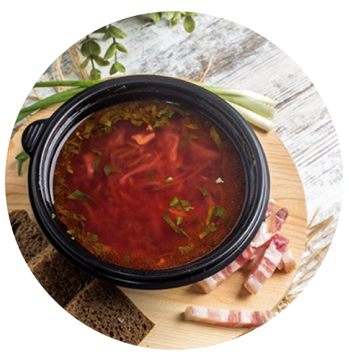
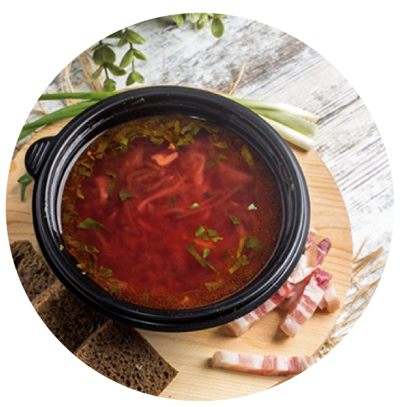

品牌理念
Brand Philosophy
在 Brew & Belle Café， 我們相信，美好的一天，始於一杯被用心對待的咖啡—— 那是一份溫度，也是一種態度。
「Brew」象徵專注、職人的堅持與手作的溫暖； 「Belle」代表優雅、柔和與留白的美。 當兩者交織，我們希望創造的不只是飲品，而是一幅日常風景： 一個能讓時間變得柔軟、感受變得細緻的地方。
我們以精品咖啡為核心，從世界各地挑選風味獨特的咖啡豆， 並以不同烘焙層次呈現其最純粹的個性。 手沖時的蒸氣、義式濃縮的香氣，每一杯都保留著咖啡豆來自產地的故事。 我們相信，一杯咖啡，不僅喚醒身體，更能喚醒心裡那份安定與期待。

 

除了咖啡，我們也希望用食物延伸這份溫度。 現烤薄脆披薩、慢火燉煮的義大利麵、香氣誘人的手作炸物—— 每一道都以「剛剛好」的份量與風味陪伴你， 讓忙碌生活的縫隙裡，也能藏著值得細細品味的小幸福。 因為我們始終相信，一杯好咖啡，值得一份能讓心滿足的搭配。
走進 Brew & Belle Café，不會看到過度華麗的陳設， 取而代之的是柔和光線下的木質香、輕柔的背景樂、 以及一張能讓你放下重量的座椅。 這裡沒有匆忙，只有剛好的節奏； 沒有壓力，只有空氣裡那份令人放鬆的沉穩。
我們希望，每位來到這裡的客人，都能找到屬於自己的角落： 有人在午後看書，有人在落雨的日子品嘗一杯熱拿鐵， 也有人選擇把這裡當成結束一天工作的溫柔句點。 無論你是哪一種，我們都希望能悄悄陪伴你， 在平凡的生活裡，替你保留一小片可以呼吸的風景。
Brew & Belle Café， 為你釀一杯美、留一份暖。 讓這裡成為你日常裡的片刻停靠—— 一個不用特別計畫，也能帶來幸福的地方。
Where beauty is brewed, and warmth stays.